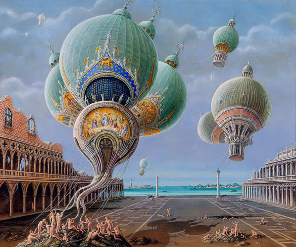

We are one, but we are many, and from all the lands on Earth we come, we share a dream and sing with one voice -
I am, you are, we are Australian.
One, but many aims to provide a graphical discovery interface for exploring Australia's multicultural heritage. By drawing on historical immigration statistics and the National Archives of Australia's Passenger Arrivals dataset, and by enriching that data with archival material including images, video and metadata about countries, One, but many aims to tell the stories of the people who came to Australia, their journies, and the places from which they came.
Nation Building
{kind=link}
In 1945, with a population of some seven million people, Australia was just emerging from World War II. The Right Honourable Ben Chifley became Australia's 16th prime minister and established the Department of Immigration on 13 July 1945. The department began with just 24 officers—six in Canberra, six in Melbourne and 12 in London.
Amid the aftermath of World War II the department opened its doors, with widespread community support. The aim was to contribute to the building of Australia as a nation-with a target of an annual population increase from immigration of 1 per cent. The department made a concerted effort to support the Australian public, business and trade union movement to generate an intake matching increases by birth in the Australian born population.
With compassion, and to assist large numbers of displaced people, Australia entered into agreements with other governments and international organisations for free or assisted passage schemes from a range of European countries and also to resettle displaced people from camps in Europe. For a time, the department also repatriated Australians from overseas.
With no ships available for movements of migrants and aircraft that could do the job years away, the government purchased a burnt-out hulk, refurbished it and named it the New Australia.
The first migrants from Britain arrived in January 1947 and the first displaced people arrived in Fremantle in November 1947. The program gained momentum and in 1949 alone nearly 120 000 assisted migrants arrived in Australia. One of the more enduring and tangible examples of nation-building was the Snowy Mountains Hydro-Electric Scheme-which began in 1949 and by the time it was completed in 1974 had employed more than 100 000 people from more than 30 countries, with more than 70 per cent being migrants. As early as November 1955, Australia's millionth post-war migrant, Mrs Barbara Porritt, arrived in Melbourne.
Department of Immigration and Citizenship Annual Report 2009–10
Design
We follow the International Typographic (also known as Swiss) Style, which gained popularity at about the same time as the immigration period covered by One, but many.
 Flight of the Churches. Image used under a CC license. Image Source.The colours and styling are inspired by the Vienna School of Fantastic Realism, also dating to the late 1940s, as explified by Brigid Marlin's Flight of the Churches.
Data
The site covers the period of 1921 - 1949, as this was the coverage of the Passengers Arrival Index. This dataset is currently incomplete, however the interface is easily expanded to cover a larger dataset and time period when the data becomes available.
Code
One, but many was developed by Anna Gerber (concept, design, data preparation and code), Tamara McKenzie (concept and design) and Brendan Halliday (data preparation) from the Hack the Evening maker collective. The code is available on GitHub at https://github.com/AnnaGerber/onebutmany.
Open source libraries and frameworks used include Twitter Bootstrap, LeafletJS, our own custom map tiles hosted by CloudMade, Font Awesome, Rickshaw (based on D3) and Filament Group Slider.
Future Work
This app provides a proof of concept covering only a small subset of the peak migration periods to Australia, with some of the source data manually assembled. With additional time, and additional processing and expansion of the existing datasets, the inclusion of this additional data could be automated using searches on Internet Archive, National Archives of Australia and Trove content, improving the coverage of the app.
The stories could also be enriched by incorporating additional datasets, for example the State Library of Victoria's Shipping dataset to provide information about the ships on which people migrated to Australia.
With more time and improved metadata we would also like to integrate the NAA Dictation Test exemption images that were used for Invisible Australians.
As the amount of data increases, the LeafletJS marker clustering plugin could be incoporated to support aggregating the passenger counts at different map zoom levels.